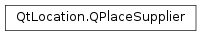

QPlaceSupplier¶
Synopsis¶
Detailed Description¶
The
PySide2.QtLocation.QPlaceSupplierclass represents a supplier of a place or content associated with a place.Each instance represents a set of data about a supplier, which can include supplier’s name, url and icon. The supplier is typically a business or organization.
Note: The Places API only supports suppliers as ‘retrieve-only’ objects. Submitting suppliers to a provider is not a supported use case.
-
class
PySide2.QtLocation.QPlaceSupplier¶ -
class
PySide2.QtLocation.QPlaceSupplier(other) Parameters: other – PySide2.QtLocation.QPlaceSupplierConstructs a new supplier object.
Constructs a copy of
other.
-
PySide2.QtLocation.QPlaceSupplier.icon()¶ Return type: PySide2.QtLocation.QPlaceIconReturns the icon of the supplier.
-
PySide2.QtLocation.QPlaceSupplier.isEmpty()¶ Return type: PySide2.QtCore.boolReturns true if all fields of the place supplier are 0; otherwise returns false.
-
PySide2.QtLocation.QPlaceSupplier.name()¶ Return type: unicode Returns the name of the supplier which can be displayed to the user.
The name can potentially be localized. The language is dependent on the entity that sets it, typically this is the
PySide2.QtLocation.QPlaceManager. TheQPlaceManager.locales()field defines what language is used.
-
PySide2.QtLocation.QPlaceSupplier.__ne__(other)¶ Parameters: other – PySide2.QtLocation.QPlaceSupplierReturn type: PySide2.QtCore.boolReturns true if this supplier is not equal to
other, otherwise returns false.
-
PySide2.QtLocation.QPlaceSupplier.__eq__(other)¶ Parameters: other – PySide2.QtLocation.QPlaceSupplierReturn type: PySide2.QtCore.boolReturns true if this supplier is equal to
other, otherwise returns false.
-
PySide2.QtLocation.QPlaceSupplier.setIcon(icon)¶ Parameters: icon – PySide2.QtLocation.QPlaceIconSets the
iconof the supplier.
-
PySide2.QtLocation.QPlaceSupplier.setName(data)¶ Parameters: data – unicode Sets the
nameof the supplier.
-
PySide2.QtLocation.QPlaceSupplier.setSupplierId(identifier)¶ Parameters: identifier – unicode Sets the
identifierof the supplier.
-
PySide2.QtLocation.QPlaceSupplier.setUrl(data)¶ Parameters: data – PySide2.QtCore.QUrlSets the
urlof the supplier’s website.
-
PySide2.QtLocation.QPlaceSupplier.supplierId()¶ Return type: unicode Returns the identifier of the supplier. The identifier is unique to the manager backend which provided the supplier and is generally not suitable for displaying to the user.
-
PySide2.QtLocation.QPlaceSupplier.url()¶ Return type: PySide2.QtCore.QUrlReturns the URL of the supplier’s website.
© 2018 The Qt Company Ltd. Documentation contributions included herein are the copyrights of their respective owners. The documentation provided herein is licensed under the terms of the GNU Free Documentation License version 1.3 as published by the Free Software Foundation. Qt and respective logos are trademarks of The Qt Company Ltd. in Finland and/or other countries worldwide. All other trademarks are property of their respective owners.